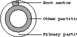
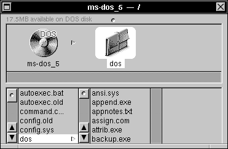

NEXTSTEP In Focus, Spring 1993 (Volume 3, Issue 2).
Copyright ©1993 by NeXT Computer, Inc. All Rights Reserved.
Surviving DOS
Dan Peknik
If your Intel computer comes with NEXTSTEP preloaded and configured and you plan to use NEXTSTEP exclusively, you might never have to use DOS. However, if you have to install NEXTSTEP or if you want to switch between it and DOS (or another operating system), you may need to learn some DOS basics. Don't worry--this article gives you a comfortable start.
WHENCE DOS?
DOS (Disk Operating System) was introduced in 1981 for release with IBM's PC flavor of computers. While DOS is not the multitasking mogul that UNIX is, its style and wide acceptance make it appealing to many. Proponents of DOS say that its widely documented features and general industry acceptance make it an ideal platform for home use.
There are currently several versions of DOS in use. Of them, DOS 4 is notable for removing the limit of 32 MB per disk partition and including built-in advanced memory management. There's also DOS 5, the version recommended for use with NEXTSTEP. And now, DOS 6 is being released.
BASIC DIFFERENCES
If you need to use DOS commands, there are a few things you must know right away.
First, file names and commands in DOS are not case-sensitive as they are in UNIX. For example, in DOS, a file named MyFile.txt is the same as a file named myfile.txt or MYFILE.txt. In UNIX, these would be three different files.
Also, DOS file names, unlike file names in UNIX, can have no more than eight characters in the prefix (the main part of the name), and no more than three characters in the extension. You can use the letters A through Z and the numbers 0 through 9 in file names. In addition, these characters are valid:
 ~ ! @ # $ ^ & ( ) - _ { } '
~ ! @ # $ ^ & ( ) - _ { } '
For instance, ~MYFILE.$$$ is a valid DOS file name, while *MYFILE.%%% is not. Also, DOS file names can't include spaces.
A further difference is that the path name delimiters for DOS and UNIX are different, and confusingly so. In UNIX you indicate directory names on a path with the character "/", while in DOS you use "\". (This is often disconcerting for first-time users of either system, and even for pros who have been away for a while.) So, a path name that looks like /usr/spool/mail in UNIX is \usr\spool\mail in DOS.
A more subtle difference is that, while UNIX sees most everything in its file system as a file--directories are just a special kind of file--DOS treats files and directories differently from each other. For example, UNIX sees the directory /etc the same way it sees any file within it; a directory is just a file that contains information about other files. DOS marks directories specially and gives them their own standing in the File Allocation Table, or FAT. This FAT is like a table of contents for your disk. It contains a listing of all files, file types, and locations like a library card catalog.
A little experimentation in DOS reveals the significance of these differences.
TRANSLATING COMMANDS
Although you can accomplish many of the same tasks with both DOS and UNIX, few commands are common between them. The table below is a quick reference to the basic commands of the two operating systems.
| Task | DOS command | UNIX command |
| List the contents | dir | ls |
| Create a new directory | mkdir directory | mkdir directory |
| md directory | ||
| Remove a directory | rmdir directory | rmdir directory |
| rd directory | ||
| Erase a file | erase file | del file |
| rm file | ||
| Copy a file | copy oldname newname | cp oldname newname |
| Go to another directory | cd \dir\dir | cd /dir/dir |
| Go to the root directory | cd \ | cd / |
| Move or rename a file | rename oldname newname | mv oldname newname |
| Clear the screen | cls | clear |
| Display a text file | type file | cat file |
| Start a text editor | edit | vi |
| edlin | ed ex | |
| Check a disk | chkdsk | fsck |
| Display a file, | type file | more | more < file |
| more file | ||
| Set an environment | set variable | setenv variable |
| Print a file | print file | lpr file |
| Show help information | help | man |
| Back up a file system | backup | dump tar dd |
When a DOS command has options, you indicate them with a forward slash (/). For example, the command "dir /w" displays a directory listing the file names in columns.
FILE NAME EXTENSIONS
In using DOS, you'll find that files generally have three-character extensions. These extensions define what type of file you are dealing with. Here are some standard DOS extensions:
| Extension | Type of File |
| .COM | An executable file |
| .EXE | An executable file, often an application; to run it type the file name without the extension (for example, to run test.exe type "test") |
| .SYS | A DOS system file, often containing a device driver |
| .BAT | A DOS "batch" file in ASCII format, containing DOS commands to be run in sequence; for example, autoexec.bat |
| .CPI | Code Page Information for defining International Character Sets |
| .HLP | A help file |
| .PRO | Printer profiles for the graphics command |
| .INI | A Windows or DOS Shell initialization file, in ASCII format |
FILES TO KNOW
In configuring DOS, you'll probably come across two important files named autoexec.bat and config.sys. The file config.sys defines memory usage and allocation of memory to such things as drivers for your mouse, Ethernet card, and other devices. After config.sys has laid the foundation, the autoexec.bat file runs batch commands to do things like start a program automatically after booting, clear the screen, or change the command line prompt.
Here's an example of config.sys:
DEVICE=C:\DOS\HIMEM.SYS
DEVICE=C:\DOS\EMM386.EXE
DOS=HIGH
LASTDRIVE=E
When it runs, the file loads a memory manager and an extended memory manager, loads DOS into the upper section of memory, and sets the last drive to be E:.
Here's an example of autoexec.bat:
@ECHO OFF
PROMPT $p$g
PATH A:\;C:\;C:\DOS
SET TEMP=C:\DOS
When it runs, this file turns echoing off (so the remaining commands aren't shown on the screen as they run), changes the command line prompt so that it shows the current directory, sets up a path for searching for files, and sets the environment variable TEMP, which indicates where programs should store temporary files.
These files are a way to configure DOS the way you like it. You can experiment with them and optimize them however you want.
"N FOR NEXTSTEP, D FOR DOS"
If you want to be able to run DOS and NEXTSTEP (or any other operating system), you'll need to partition your disk. A hard disk for your computer can have up to four partitions, which are like virtual disks. You use two utilities to configure partitions, fdisk and format. The utility fdisk creates partitions and marks each one with its respective function (primary partition, extended partition, or logical partition). It also indicates which is the boot partition. format formats the partitions, as well as the actual disks. Become familiar with these utilities since they play a big role in your PC's NEXTSTEP configuration. (See your DOS documentation and installation guide for details.)
If you want to be able to boot from DOS, you need a DOS partition. Your installation guide explains how create partitions, as well as how to indicate which partition to boot from by default.
When you use it to create a DOS partition, fdisk also writes two hidden files to the DOS partition: io.sys and msdos.sys. The io.sys file contains instructions that deal with the input and output capabilities of your computer's ROM, while the msdos.sys file contains instructions for writing to disks, setting date and time, specifying serial ports, and the like.

The boot sector indicates where partitions start.
When your computer boots, it first looks at the boot sector of your hard disk. The boot sector points to the active partition, which is the one the system should boot from.
The computer then goes to that partition and, if it's a DOS boot partition, runs io.sys. In turn, io.sys calls a program called sysinit, which calls ms-dos.sys, which in turn calls a configuration text file called config.sys that contains information about how DOS should configure memory. Then, sysinit locates and runs command.com, which contains all of DOS's commands such as dir and mkdir. DOS is then ready to go--you can start Microsoft WindowsTM or continue to work in DOS.
In contrast, if the boot sector points to a NEXTSTEP partition or if there is only one partition (a NEXTSTEP partition), the system loads a file called boot1. The file boot1 knows how to find boot (actually /usr/standalone/boot), the NEXTSTEP boot block. NEXTSTEP starts and loads as usual.
When you install NEXTSTEP and create partitions, the installation application replaces the existing boot sector with a different but compatible one called boot0. This new boot sector doesn't automatically boot from the active partition, but instead asks you to indicate which partition to boot from (that's where the "n for NEXTSTEP, d for DOS" prompt comes in). It then accesses that partition and loads the proper boot file.
DOS FILES IN NEXTSTEP
If your machine is configured correctly and you have a DOS partition that NEXTSTEP can recognize, you can see your DOS partition when you're in NEXTSTEP, as in the figure below.

DOS files can appear in a File Viewer window.
NEXTSTEP gives you access to the files in your DOS partitions. This makes transferring files between NEXTSTEP and DOS easy. You can, for example, view text files in Edit by double-clicking them. You can test this out by looking at DOS files like autoexec.bat and config.sys.
However, you can't run DOS applications directly from Workspace ManagerTM, as you can NEXTSTEP applications. To do that, you'll need to switch to DOS, or use a DOS emulator like Insignia's SoftPC®. (Editor's note: See "Tips & Techniques" for more on using DOS and NEXTSTEP together.)
FURTHER READING
If you want to find out more about DOS and how to use it, there are many excellent books available to help you. The following are highly recommended:
Jamsa, Kris A. DOS, The Complete Reference, 3rd ed. Berkeley, CA: Osborne McGraw-Hill, 1991.
Gookin, Dan. Beginner's Guide to DOS. San Diego, CA: Computer Pub. Enterprises, 1991.
Miller, Alan R. The ABC's of MS-DOS. San Francisco, CA: Sybex, 1988.
Dan Peknik is a System/Network Support Engineer in the Customer Support Team. You can reach him by e-mail at Dan_Peknik@next.com.
KNOW THE LINGO
If you're new to Intel machines, you may be trying to figure out what ISA and EISA are, and whether expanded memory and expansion buses have anything to do with each other. Here's a list of PC-related terms to help you find your way through the jargon.
active partition The partition your computer boots from. The master boot record is located here; it tells the machine how to boot and what files to use in doing so, thereby determining which operating system it will use. This is usually your C: drive in DOS. It's also known as the "primary partition" or "boot partition." See also partition, extended partition, and logical partition.
boot partition See active partition.
boot sector A reserved sector that contains information about the disk, including the disk's capacity and any partitions on the disk. In particular, it indicates whether the disk is partitioned and which is the active partition. It's also known as the "partition table."
BIOS (Basic Input/Output System, or ROM BIOS) Routines that act as the interface between the operating system and hardware devices. In general, the BIOS contains the interfaces for specific hardware, while device drivers contain generic interfaces.
cold boot The process of starting your computer by turning it on.
conventional memory The first 640KB of memory in a PC. This was the maximum contiguous memory accessible by early PCs. See also extended memory and expanded memory.
DMA channel (Disk Memory Access channel) A port that a high speed communication device can use to communicate with the CPU. DMA channels can be shared by devices if they are not used by more than one device at a time; however, usually they are assigned to only one device. See also I/O port.
EISA (Extended Industry Standard Architecture) A 32-bit expansion bus standard that is compatible with ISA. It's pronounced "e - sah." See also ISA and MCA.
expanded memory A memory system designed for the 8088 and 8086 computers to allow them to access more than 1MB of memory, up to 32MB. This system pages information in and out of conventional memory. See also conventional memory and extended memory.
expansion bus A system that allows you to add peripherals to your PC. NEXTSTEP supports two buses for the PC: ISA and EISA. See also MCA.
extended memory The memory beyond the 1MB addressable by the 8088 chip, accessible only in protected mode. See also conventional memory and expanded memory.
extended partition In DOS, a second partition after the primary partition. See also partition, active partition, and logical partition.
FAT (File Allocation Table) A table that DOS uses to store and track the location of each file's contents, available disk space, and damaged sectors.
IDE (Integrated Device Electronics) A disk drive interface standard. Contrast with SCSI.
I/O port A port (essentially a range of space in memory) through which the CPU communicates with a device.
IRQ line (Interrupt Request line) An interrupt number with which a device is associated and by which the device signals interrupts to the CPU. Each device must have a unique IRQ line; there are 16 IRQ numbers available in a PC. The CPU responds to interrupts in order of priority, with the lowest numbered IRQ line having highest priority.
ISA (Industry Standard Architecture) An 8- or 16-bit expansion bus standard that is the predominant bus architecture. It's pronounced "i - sah." Contrast with EISA and MCA.
logical partition A partition that exists within an extended partition. To partition a disk into more than two drives using DOS fdisk, you create an extended partition and divide it into logical partitions called D:, E:, and so on. NEXTSTEP fdisk can divide a disk into up to four actual partitions. See also partition, extended partition, and active partition.
master boot record (MBR) The first track of the disk, which tells the system how to boot, usually by pointing to the active partition.
MCA (Micro Channel Architecture) A 32-bit expansion bus standard that is not compatible with ISA. This standard is not supported for NEXTSTEP. Contrast with ISA and EISA.
multi-sync monitor A type of monitor that can automatically adjust its synchronization to the output of the attached video card. Such monitors are recommended for use with NEXTSTEP.
non-interlaced monitor A monitor that displays an entire screen at a time, rather than all of the even lines, then the odd lines, then the refreshed even lines, and so on. A non-interlaced monitor exhibits less flicker. Such monitors are recommended for use with NEXTSTEP.
partition A collection of circular tracks (or cylinders) on a hard disk that is used for a single purpose. See also active partition, extended partition, and logical partition.
partition table See boot sector.
primary partition See active partition.
protected mode A mode of accessing PC memory that allows the operating system to access memory beyond the first 640KB. This mode is available in systems with a 80286 chip or later ('386, '486, and so on). See also extended memory.
RAM base address For each device, the lowest address where the driver software for that device is stored.
SCSI (Small Computer System Interface) A general purpose device interface standard. It's used for all kinds of devices, like printers, scanners, serial ports, and disk drives. Contrast with IDE.
SVGA (Super VGA) An extension to the VGA standard. SVGA monitors can display 800 x 600 pixels in 16 or 256 colors, depending on the amount of video memory available. SVGA cards are often also capable of higher resolutions with fewer colors.
system disk A disk containing the files that load an operating system. Also called a "boot disk."
Upper Memory Block (UMB) Space in memory (the addresses from 640KB to 1MB) that stores BIOS routines to access hardware interfaces such as video adapters, Ethernet cards, and expanded memory page addresses. None of this memory is available for standard program memory.
VESA (Video Electronics Standards Association) An industry association that establishes video and data bus standards.
VGA (Video Graphics Adapter) A PC video standard that can display 640 x 480 pixels in 256 colors (eight bits).
warm boot The process of restarting your computer without turning it off. To do this in DOS, press CTRL-ALT-DEL; in NEXTSTEP on a PC, press ALT-NumLock.